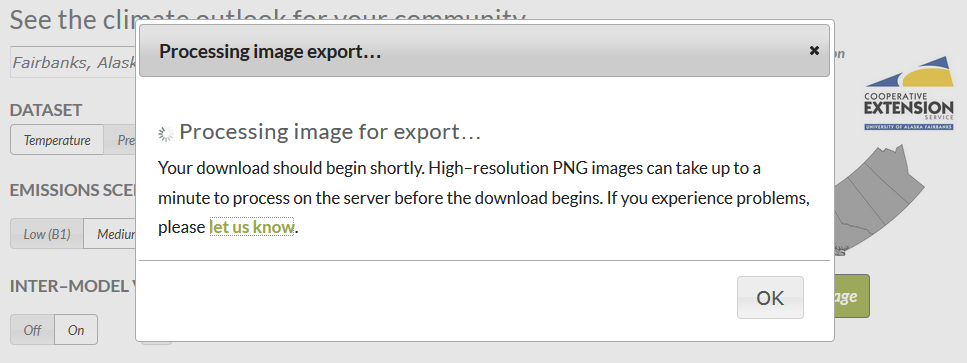

Some things are much less important than data content, quality, and graphing practices, but still worth noting. I note them here for the record, albeit at risk of great peril, that others may not heed my recommendation to ignore these things and instead focus on this minutiae when there are bigger fish to fry.
The interactive nature of the original application is limited. The user does not have the ability to manipulate the plot in some fundamental ways intrinsically provided by the Highcharts library. The javascript library was chosen in part because it generates interactive plots, but as far as interactive plots go, the original version is very stale.
Overall, the version 1 application page looks cartoonish. It appears fanciful. First impression on visiting the page is it feels like playing with a toy. This is of course in part my opinion, but I say in part because there are generally agreed upon reasons and common perspectives which explain why there aren’t many similar web tools that have an appearance like Community Charts version 1.
The font is excessively large. Sometimes we attempt to cater to audiences that largely do not exist for our content. Note that font size in a browser is easily controlled by the user. Many do not know this only because it is irrelevant to their concerns. Of the very few who do, they can generally handle it on their own. It seems laudable on the surface, but there is no need to fill a page with big text and big buttons and emphasis added where emphasis not needed.
There is an overuse of italicized font. All the italicized font in the community selection menu and on the buttons should be set back to normal.
The CSS could use significant improvement. Modals/popups are oddly formatted with multiple close buttons (yet an inability to close a window by clicking outside of it) and redundant titling. Again, the font is too large.
The graph itself, based on the Highcharts library, cannot be expected to scale up or down on window resizing (at least not without custom programming) or scale itself for use on different devices. Nevertheless, there is no reason all the other content on the page should not consist of responsive elements which expand and collapse automatically.
The behavior of the plot download popup is even more problematic than its oversized presentation. If you attempt to download a plot, it does not necessarily give you the plot that you request. Furthermore, unless the user is downloading to somewhere like to their Desktop and it is in view and they happen to notice the downloaded file has appeared on their computer, they may wonder what is taking so long. The popup never vanishes. The loading circle will spin indefinitely. I suppose that’s why this popup offers an OK (and an x) whereas others offer a close (and an x), right?

The user must sit and watch this until they decide something has gone wrong and they elect to manually close the download popup window while their download appears to still be in progress, only then to realize that nothing went wrong and they’ve been waiting for however long for no reason. Highcharts actually provides its own plot exporting capabilities currently. It may be more sensible to just make use of that. It also offers more download options and less funny business.
None of these things from version 1 are addressed in this documentation on CC4 Lite because they are lowest priority, having nothing to do with data, analysis, or graphing. They are simply noted for the record as worth improving when time permits. Also, these issues are not relevant to R-based CC4 Lite, or my versions 2 and 3 of Community Charts. They only exist to be contended with in the alternate universe that is the original application.